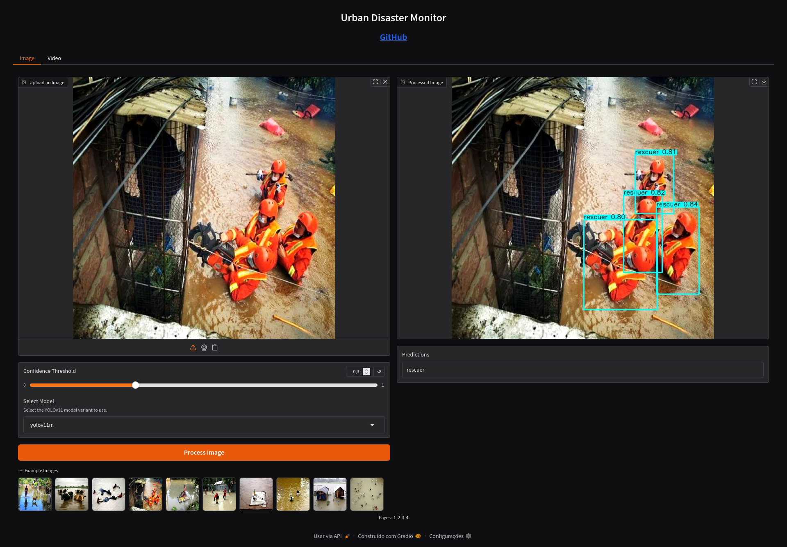
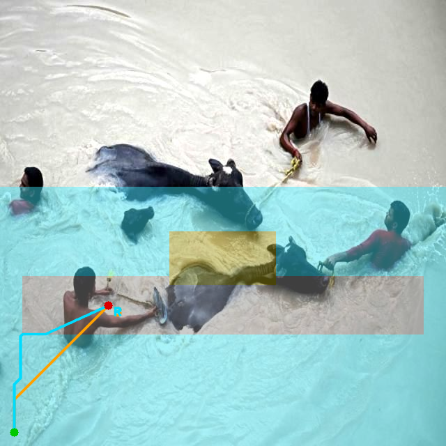
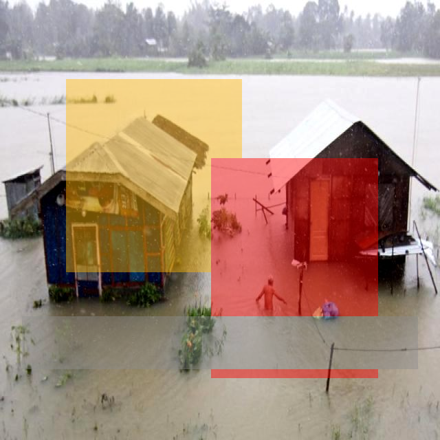
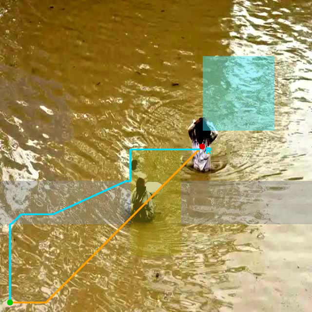
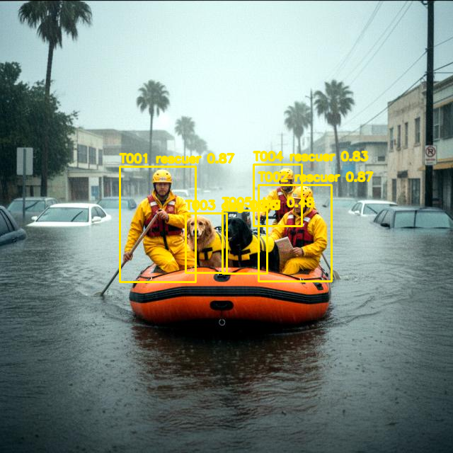

TERP Target-Environment-Route Priority Model
融合目标类别、检测置信度、目标尺度、环境风险与路径可达性，给出综合救援优先级。
LOW-ALTITUDE UAV EMERGENCY RESCUE PROTOTYPE
面向低空应急救援的无人机多模态灾情识别与辅助决策系统。它把目标检测、灾区语义理解、TERP 救援优先级、Risk-Aware A* 路径规划和中文报告生成串成一个完整的竞赛展示闭环。

从无人机图像/视频输入，到目标识别、环境风险理解、优先级排序、路径建议和中文救援报告。
黑底、强对比、少颜色，只让关键功能和关键状态跳出来。
融合目标类别、检测置信度、目标尺度、环境风险与路径可达性，给出综合救援优先级。
对比普通 A* 和分割代价地图 A*，尽量减少高风险区域经过比例。
把检测、环境理解、救援决策、路径和报告串联成一个可展示的竞赛闭环。
所有展示图片都来自本仓库生成结果。manual demo mask 仅用于决策层演示，不是自动分割预测。

water risk + TERP priority + Risk-Aware A* 避开高风险积水。

major_damage / destroyed_building 提升环境风险并影响报告建议。

阻断道路提高代价，Risk-Aware A* 会尝试绕行。

展示 civilian、animal、rescuer 的 TERP 排序区别。
无明确目标时，系统不乱生成路径，直接输出安全 fallback 报告。
页面只展示 AeroRescue-AI 自己的流程和输出，不把它写成外部仓库集合。
完整支持检测、mask 融合、TERP、路径对比和中文报告。
保留轻量检测预览，适合演示速度和视频输入能力。
展示 5 个完整 demo case，便于答辩和视频制作。
交互式能力仍在本地 Gradio 中运行。这个静态站主要用于 GitHub Pages 演示与评审预览。
git clone https://github.com/lheng2386-png/low-altitude-smart-rescue-demo.git
cd low-altitude-smart-rescue-demo/app
python3 -m venv venv
source venv/bin/activate
pip install -r requirements.txt
python app.py当前路径规划是图像平面参考路径，不等同于真实 GPS 路线，也未接入真实道路网络、无人机定位或飞控系统。手工 demo mask 仅用于决策层展示，不是自动分割结果。